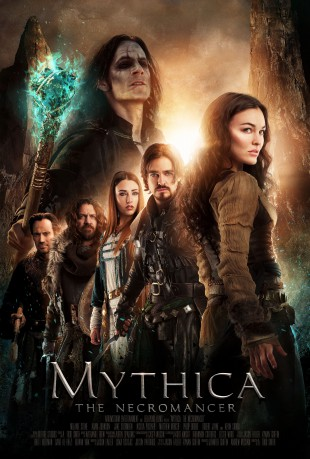

IMDB-Wertung: 5.9 / 10
IMDB-Wertung: 5.9 / 10  Metascore:
Metascore: 
Mallister takes Thane prisoner and forces Marek and her team on a quest.
Alternativ: Mythica: The Necromancer
 IMDB-Wertung: 5.9 / 10 Metascore:
Mallister takes Thane prisoner and forces Marek and her team on a quest.
Jahr: 2015
Dauer: 95 Minuten
FSK:
Land: USA Studio: CONtvTonspuren: DTS - ,
Untertitel: Deutsch,
Auflösung: 1080p (1920x1080) Größe: 10209 MB
Genre: Action, Abenteuer, Fantasy
Regisseur: A. Todd Smith
Drehbuch: Jason Faller
Soundtrack:
Darsteller:
Datei: X:\4-Tetralogie(M-Z)\Mythica\Mythica - Der Totenbeschwörer (2015, FSK, 1920x1080).mkv seit 09.10.2017
Festplatte: HD Collection-3(N-Z)-6(A-Z)
 Es gibt insgesamt 7 Filme in der Gruppe '4-Tetralogie(M-Z)\Mythica'
Es gibt insgesamt 7 Filme in der Gruppe '4-Tetralogie(M-Z)\Mythica'